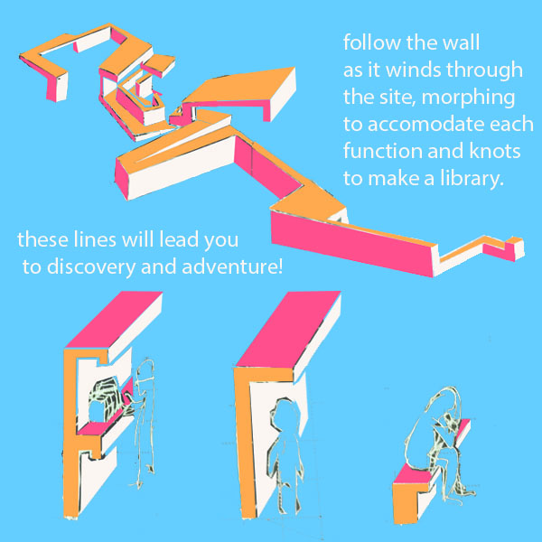
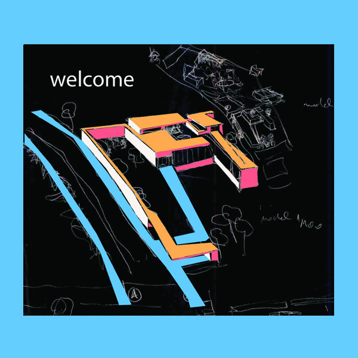

ayvansaray local library ayvansaray local library
ayvansaray local library ayvansaray local libraryA BOOK has the potential to take you to unexpected places. The old city walls of istanbul, to be found in quite an intact state right across the street from the park in ayvansaray, may do the same... A WALL posseses strong ability to lead; exploring a wall of that size: over, under, beside, inside of its shear mass, sharing its route, listening to its story for an afternoon, opens one to an array of different spatial experiences. Following the lines of a wall's route can be compared to following the lines on a page of a book.
You can see how the wall both separates the library building from the noisier activities to form a series of quiet courtyards for more thought-full doings and simultaneously ties it back to the rest of the park through its continuity and shapeshifting abilities. Let us take a closer look at the library building itself:
Using this chosen spatial representation of lines: WALLS in all of its potentials to hug a space or program from multiple dimensions; a primary route has been chosen by way of connecting to each other the areas with the least trees. Thus, settlement shall not result in the uprooting of the existing foliage. The wall is treated as a ribbon; meandering the site so as to best facilitate chosen functions. They knot at the library.
The library has a section for general public use wrapping around in front of a dedicated childrens area at the inner heart. The shelves get plenty of natural lighting from both above and the fully glazed outer wall. Up the ramp and around are desks for quiet study. To reach the very top perch visitors must exit the building out into the fresh air and climb up the ramp on the roof. The view will include the rest of the park, the historic city walls and all the way to across the Golden Horn.